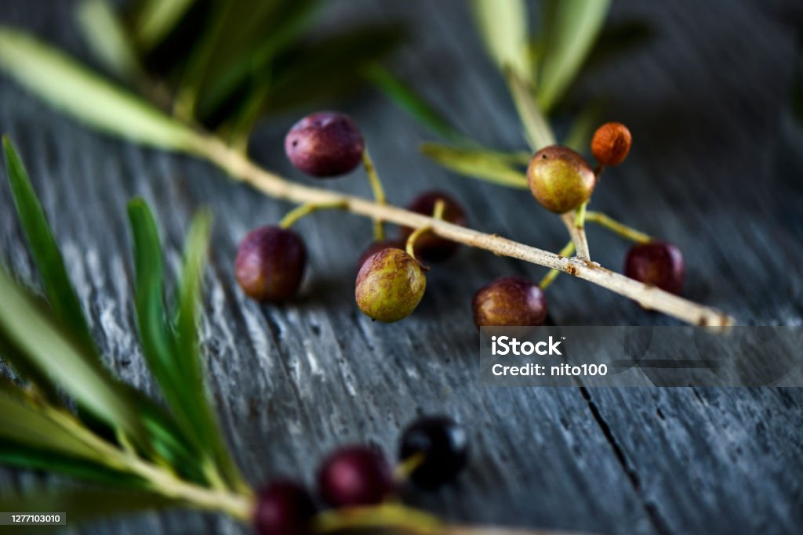
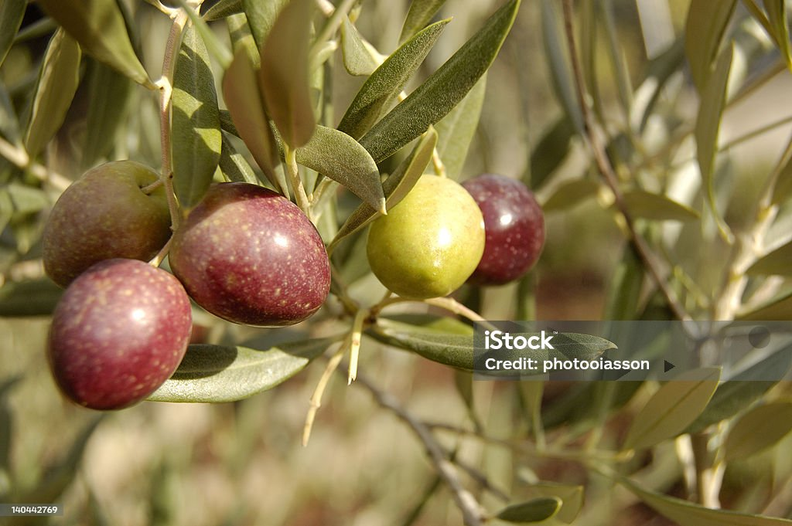
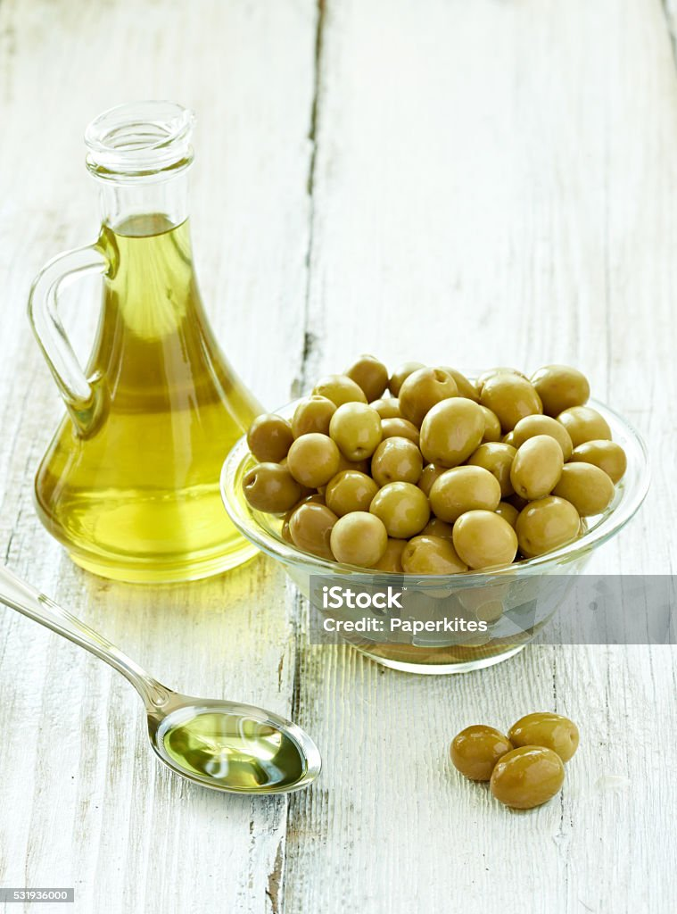

Variedad de Oliva ARBEQUINA

La variedad de oliva Arbequina es una de las más apreciadas por su sabor suave y afrutado. Originaria de la región de
Cataluña, España, esta variedad se ha extendido a otras partes del mundo debido a su alta calidad y rendimiento. Las
aceitunas Arbequina son pequeñas y de color verde a marrón oscuro cuando están maduras. El aceite de oliva virgen extra
obtenido de estas aceitunas se caracteriza por su baja acidez y su perfil organoléptico equilibrado, con notas de
almendra, manzana y hierba fresca.
El aceite de Arbequina es ideal para consumir en crudo, en ensaladas, panes y platos fríos, ya que su sabor delicado no
domina los ingredientes, sino que los complementa. Además, es una excelente opción para la elaboración de salsas y
aliños. Su alto contenido en ácidos grasos monoinsaturados y antioxidantes lo convierte en una opción saludable que
contribuye a la reducción del colesterol y a la protección contra enfermedades cardiovasculares.
Leer más...
Variedad de Oliva PICUAL

La variedad de oliva Picual es una de las más cultivadas y reconocidas en el mundo, especialmente en España, donde
representa aproximadamente el 50% de la producción total de aceite de oliva. Originaria de la región de Jaén, en
Andalucía, esta variedad se caracteriza por sus aceitunas de tamaño medio a grande y su alto rendimiento en aceite.
El aceite de oliva virgen extra obtenido de aceitunas Picual es conocido por su sabor robusto y afrutado, con notas de
tomate, higuera y hierba recién cortada. Tiene un alto contenido en polifenoles, lo que le confiere propiedades
antioxidantes y antiinflamatorias, y un alto nivel de ácido oleico, beneficioso para la salud cardiovascular. Además, su
estabilidad oxidativa es superior a la de otras variedades, lo que significa que se conserva mejor y por más tiempo.
El aceite Picual es ideal tanto para consumir en crudo como para cocinar, ya que soporta altas temperaturas sin perder
sus propiedades. Es perfecto para aderezar ensaladas, preparar salsas y marinadas, y freír alimentos, aportando un sabor
distintivo y saludable a cualquier plato.
Leer más...
Variedad de Oliva Hojiblanca

La variedad de oliva Hojiblanca es una de las más versátiles y apreciadas en España, especialmente en las regiones de
Andalucía. Esta variedad debe su nombre al color plateado de las hojas del olivo, que reflejan la luz del sol de manera
distintiva. Las aceitunas Hojiblanca son de tamaño medio y se utilizan tanto para la producción de aceite como para el
consumo en mesa.
El aceite de oliva virgen extra obtenido de aceitunas Hojiblanca se caracteriza por su sabor equilibrado y complejo, con
notas de hierba fresca, almendra y un ligero toque picante y amargo. Este perfil organoléptico lo hace ideal para una
amplia variedad de usos culinarios, desde aderezar ensaladas y verduras hasta cocinar carnes y pescados. Además, su alto
contenido en polifenoles y antioxidantes contribuye a la salud cardiovascular y a la prevención de enfermedades
crónicas.
La Hojiblanca también es conocida por su resistencia a condiciones climáticas adversas y su capacidad de adaptación a
diferentes tipos de suelo, lo que la convierte en una opción popular entre los agricultores. Su aceite es muy apreciado
tanto en el mercado nacional como internacional, consolidándose como una de las variedades más importantes y valoradas
en el mundo del aceite de oliva.
Leer más...